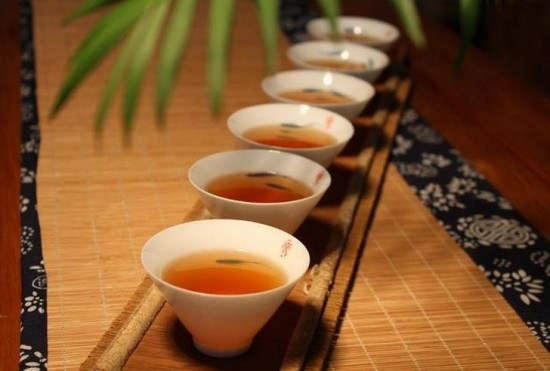

南方日报2017-02-20 11:37
像饭后喝茶、饭后洗澡的事情不少人做过吧，但是你知道吗，健康的养生标准是饭后不能做这些的，那么还有哪些事情是我们饭后不能做的呢？这些饭后七不做要牢记哟……
1．忌立即喝茶
有些人习惯放下饭碗端茶杯，吃完饭后即喝茶，这实在是弊多利少的不良习惯。因为喝茶固然能增加胃液的分泌，促进食物尤其是肉类的消化吸收，但是茶叶中含有多量的单宁，它进入胃肠道后，能使食物中的蛋白质变成不易消化的凝固物质，妨碍人体对蛋白质、铁质及其他营养素的吸收，日久天长会导致人体营养不良。有饭后饮茶习惯的人，不妨改为饭后用茶水漱口，这样既可以去油解腻、爽口洁齿，又可因茶水中含氟元素而预防龋齿。
2．忌立即吃冷饮
饭后立即吃冷饮，对消化道产生一个很强的冷刺激，会引起消化道强烈的蠕动，这样就可能引起腹痛腹泻。同时，冷热的强烈变化会使胃部血管突然收缩，长此以往就会导致胃的消化机能失调，甚至造成消化不良或其他疾患。
3．忌立即吸烟
有吸烟嗜好的人常说：“饭后一支烟，赛过活神仙。”其实，饭后吸烟，祸害无穷。据有关人员测定，饭后吸1支烟所吸收的毒物，比平时吸10支烟的毒物还多。因为人在吃饭以后，胃肠蠕动加强，血液循环加快，全身的毛细血管全都处于舒张状态，此时人体吸收烟雾的能力“最佳”，烟中的有毒物质比平常更易进人人体，从而可加重对人体的危害。
4．忌剧烈运动
民间有“饭后百步走，能活九十九”的谚语，意思是说饭后适当运动能帮助消化，有益于人体健康。但若饭后立即进行剧烈活动，如打球、跑步、从事重体力劳动等，则会影响食物的消化吸收，于健康不利。因为剧烈运动或劳动时四肢肌肉需要有较多的血液供应，胃肠道的血液供应就会相对减少。消化吸收必然会受到影响。另外，饭后胃里食物较多，重量也较大，如果运动或劳动过度，容易造成腹痛、胃下垂等病变。故运动或劳动应安排在饭后1小时之后为宜。
5．忌马上洗澡、游泳
饭后，人的消化系统即开始紧张的消化吸收工作，所需要的血液大大增加。如果此时马上洗澡或游泳，则皮肤血管扩张、血流量增加，消化道的血液供应就要减少，消化能力就会减弱。而洗澡、游泳时的全身运动，也促使各运动器官血流量增加，会进一步削弱胃肠的消化活动。另外，游泳时人体浸没在水里，一方面由于水的压力影响了胃的蠕动，妨碍食物与胃液的充分混和；另一方面，腹部血管受到冷水刺激会引起收缩，导致胃部血供不足，容易产生胃痉挛，发生呕吐或消化不良。所以，饭后应休息15分钟再去洗澡，休息半小时后再去游泳。如果是剧烈的比赛，则应在进餐2小时后举行。
6．忌立即大便
许多人有饭后立即大便的习惯，这对人体健康十分不利。因为吃饭后胃酸、消化酶分泌增多，胃的蠕动功能增强，若在胃内装满未消化的食物时排解大便，腹内压力会骤然加大，胃酸、消化酶有可能返流至食道，久之可形成返流性食道溃疡。食人硬质食物后用力大便，腹内压力很高，硬质食物易损伤胃黏膜，久之可形成糜烂性慢性胃炎。饭后马上大便还可促使幽门平滑肌功能紊乱、胆汁返流，导致胃黏膜充血、水肿、发炎。故有饭后立即排便习惯的人应逐渐改正过来。
7．忌马上睡觉
饭后，由于消化器官血流量增加，脑部血液供应相对减少，人就感到疲倦，甚至昏昏欲睡。这种现象在午饭后表现得更为明显。如果饭后马上睡觉，则胃肠道的蠕动减慢，消化液分泌减少，食物就不能得以充分消化。特别是小儿可引起消化功能紊乱、消化吸收不良，久之可引起营养缺乏症。再者，食物停滞在胃里，还会促使大脑兴奋性提高，使人不易入睡，即使是睡着了也会发生咬牙、说梦话、做恶梦等“胃不和则卧不安”的现象，因此，饭后要等一段时间睡觉。